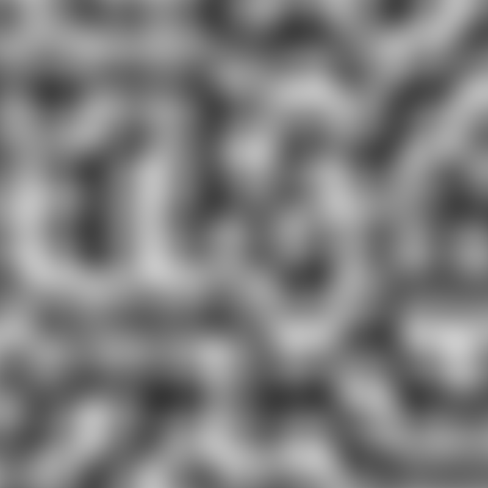
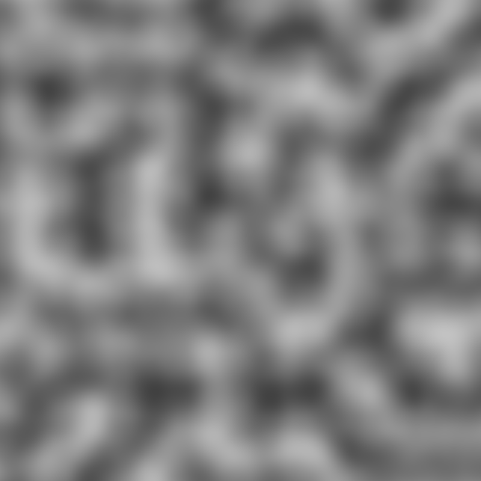
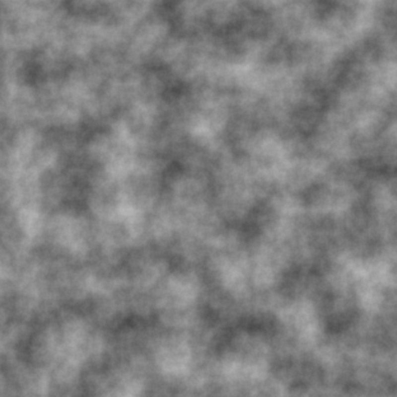
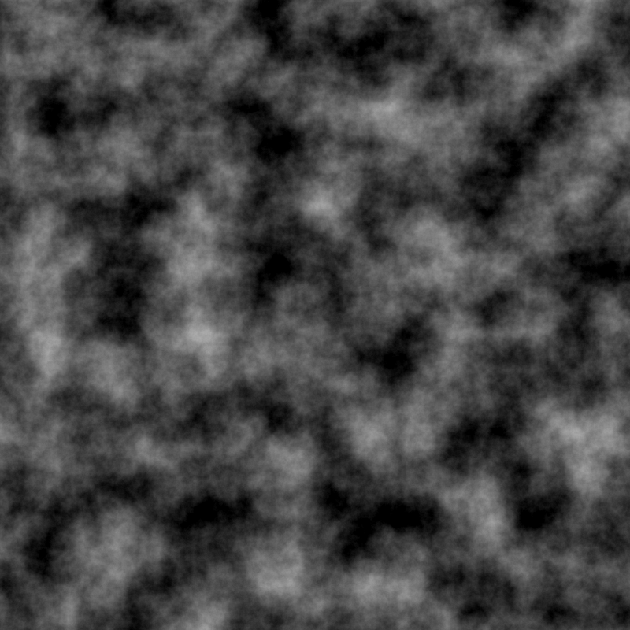
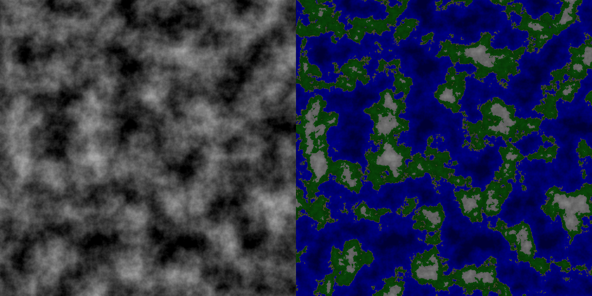
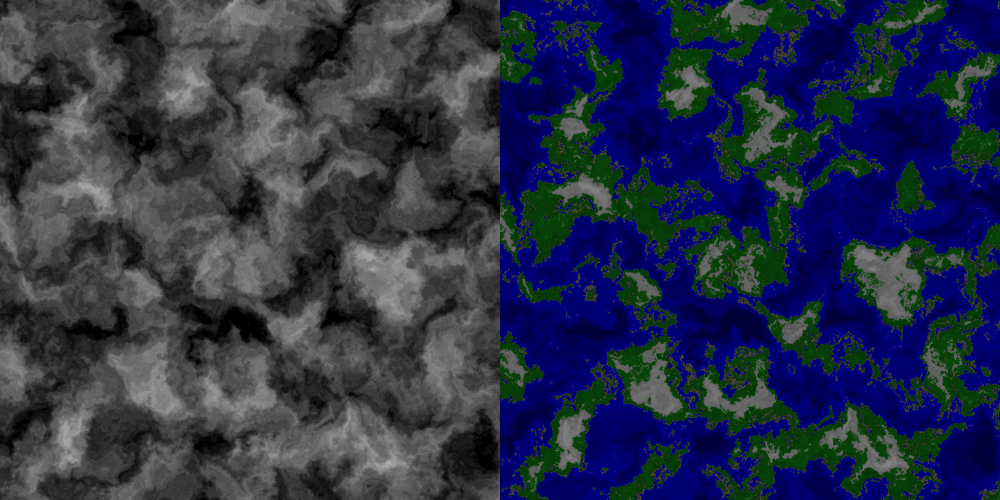

Генерация ландшафта с помощью шума Перлина
Вы же видели, как выглядят карты в 3D-играх? Горы, холмы, плавные переходы высот. И тут я задумался, а как оно вообще работает? После 30 минут поисков и чтения, я понял, что виновник этого торжества - Шум Перлина.
Что такое шум Перлина?
Насколько это я понял - карта высот, причём очень плавная. После изучения материала, я написать тестовую версию.

Как работает алгоритм
Мы берём координаты пикселя [x;y] и умножаем их на частоту, для перевода в систему координат Перлина. В моём случаи это 0.01. Дальше, для этого пикселя мы определяем координаты сектора, в котором мы находится наш пиксель. В углу каждого сектора у нас лежит случайный единичный вектор. Мы берём 4 вектора, соответствующих этому сектору и находим влияние каждого вектора на эту точку. Для этого мы находим расстояние от клетки до каждого вектора, и по следующей формуле:
vec_x * dist_x + veс_y * dist_y
где vec_x и veс_y это проекции единичного вектора, а dist_x и dist_y проекция расстояния до этого вектора. Дальше - мы ищем общее влияние векторов на нашу точку. Сперва по координате X (два верхних влияния и два нижних), и потом по Y (влияние верхних векторов, и нижних).
dotx0 = dot00 + fadeX * (dot10 - dot00)
dotx1 = dot01 + fadeX * (dot11 - dot01)
doty = dotx0 + fadeY * (dotx1 - dotx0)
dot00, dot01, dot10, dot11 - влияние векторов по отдельности
fadeX и fadeY ищется по локальным координатам по формуле:
6*t^5 - 15*t^4 + 10*t^3
где t - локальная координата x / y соответственно
Теперь нам остаётся только нормализовать значение (привести от числа [-1;1] в [0;1])
Добавление октав
Если коротко - мы суммируем несколько слоёв шума со смещением, но меньшим влиянием. И тут вскрывается первая проблема: выход за рамки массива. На данном этапе я заранее генерировал вектора, что делало смещение невозможным, т.к. дальше сгенерированных векторов - ничего нет. Урок усвоен - переписываем метод получение векторов по координатам... И всё работает! Переписываем случайные значения в наш генератор и...

Почти то же самое... Но что же не так? Спустя 30 минут перебора чисел и разбора, что за что отвечает, мы получаем следующую картину:

Уже лучше! Походит на дым, не так ли? Но его контрастность оставляет желать лучшего. И что же приходит мне в голову? Возвести значение в степень! Маленькие значения становяться ещё меньше, а большие - почти не меняются.
Хм... слишком блекло, переделываем! И я прибегаю к сдвигу значения. Делаем сдвиг value - 0.4f, и умножаем на 2.0f. Но сейчас наш сдвиг выходит за рамки дозволенного значение, поэтому просто обрезаем наше число: Всё что выше единицы - будет единицей. Ииии...

Проблемы и их решение
Такое меня уже больше устраивает. И тут всплывает ещё одна проблема - при одном и том же зерне генерации для векторов, но при разном размере, я получаю разные значения. Почему же так получается? Проблема на самом деле проста, я генерировал вектора с учётом индекса вектора (из-за работы до этого с линейным массивом, а не двумерным). Проблема решена переводом линейного индекса в координаты следующим способом:
x = (int)(index / size)
y = index % size
Покраска карты
Посидев ещё минут 15, я написал простенькую раскраску карты в зависимости от высоты:

Дальше - я решил просто покопаться с числами, что принесло интересные результаты:

Итог
Эксперимент получился неожиданно интересным.
Основные проблемы возникли не из-за сложной математики,
а из-за перехода от одной структуры данных к другой и банальной невнимательности.